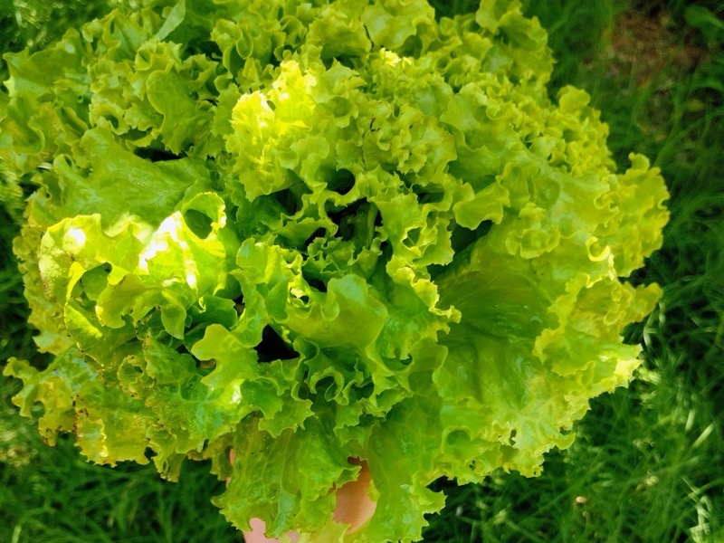
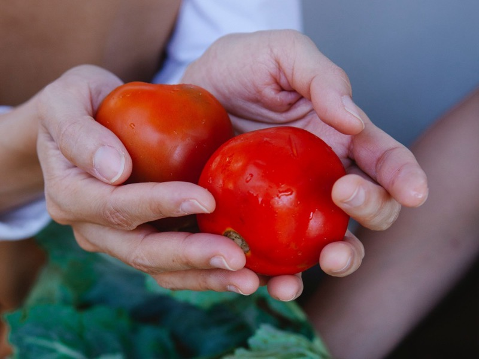
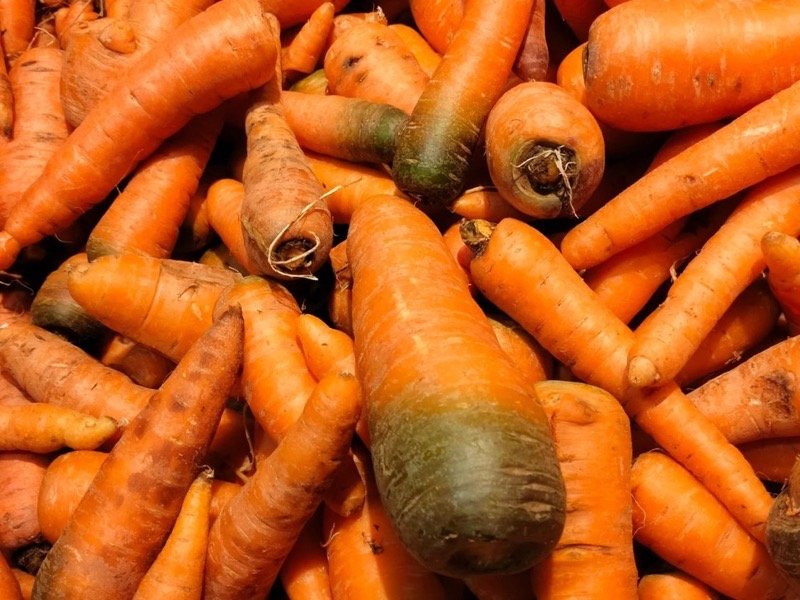

O produtor marca a sobra
O produtor marca como doação o que não foi vendido.
Alimentos que não foram vendidos são doados para ONGs, em vez de irem para o lixo.
O produtor marca como doação o que não foi vendido.
A ONG escolhe a doação e faz a reserva pelo site.
A ONG retira os alimentos direto na propriedade.
Para reservar, fale com a gente pelo formulário. O assunto já vem preenchido.


